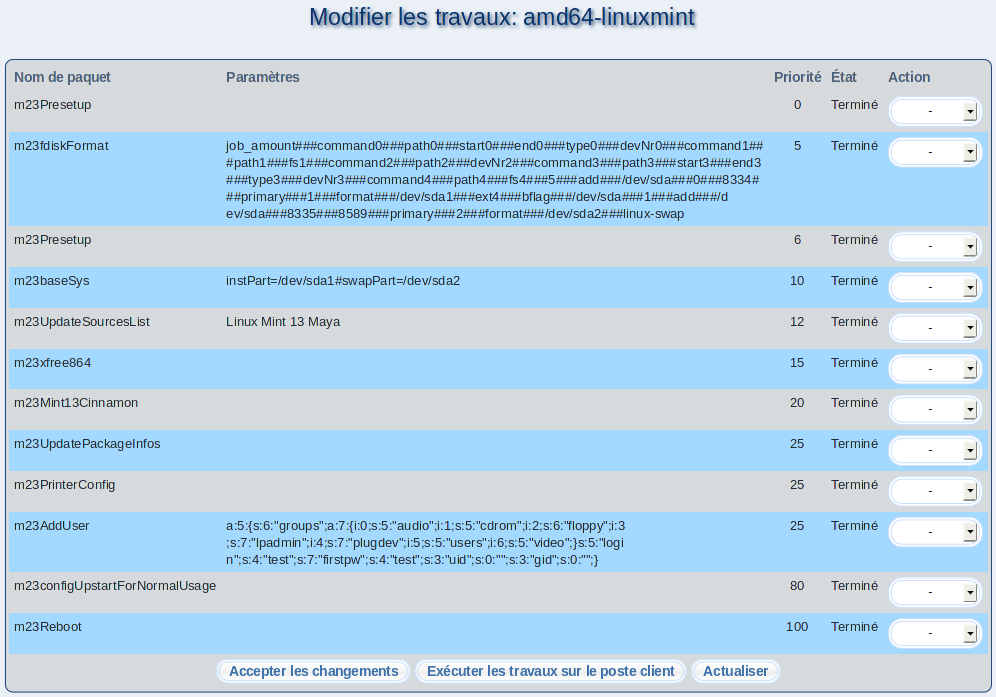

Cet écran permet de visualiser les tâches du poste client, ayant déjà été exécutées ainsi que celles en attente d'exécution; il vous est également possible de les modifier le cas écheant. Les possibilités de changement ci-dessous sont à votre disposition:

- Sélectionnez Effacer dans Action afin de supprimer la tâche définitivement.
- Répéter déplace une tâche déjà exécutée dans la liste des tâches à accomplir.
- Terminé marque une tâche comme terminée. Celle-ci ne sera plus exécutée.
Finalement, cliquez sur Accepter les changements pour enregistrer vos changements. Si vous souhaitez l'execution immédiate des tâches marquées comme à Répéter, cliquez sur Exécuter les travaux sur le poste client.
root
2017-01-05